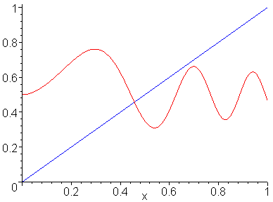
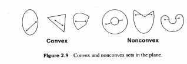

Under a continuous map of
the unit cube into itself which displaces
every point less than half
a unit, the image has an interior point.
In other words, Brouwer establishes with his theorem that under a continuous mapping of an object to itself there is at least one point where the object inevitably confronts itself (i.e., it contains itself).
Let us begin our approach to n-dimensional fixed-point theory from a couple of two-dimensional portals. B. Bolzano (1781-1848) established that if a function f, continuous on a closed interval [a, b], has values with different signs at its endpoints on that interval, then f equals zero at some point of the interval. [A2] In other words, such a zero-point is guaranteed. Less simply, but still within two dimensions, consider a square K lying on the coordinate plane R2 so that the coordinates of its points satisfy the following inequalities: 0<=x<=1, 0<=y<=1. [A3] To define such a mapping one must specifiy two real continuous functions, g and h, defined on the square K such that 0<=g(x, y)<=1 and 0<=h(x, y)<=1. Let f be a continuous mapping of the square K into itself, that is, f:K->K. If (x0, y0) is a point of the square, then its image under the mapping f is the point (g(x0, y0), h(x0, y0)), that, we observe, lies inside the square. The Brouwer fixed-point theorem assures us that there exists at least one point (xa, ya) of K such that f((xa, ya))=(xa, ya).
Brouwer's fixed-point theorem:Under a continuous mapping f : S->S of an n-dimensional simplex into itself there exists at least one point x E S such that f (x)=x.
This theorem was proved by L. E. J. Brouwer [A4]. Brouwer's theorem can be extended to continuous mappings of closed convex bodies in an n-dimensional topological vector space and is extensively employed in proofs of theorems on the existence of solutions of various equations; and the theorem has been generalized to infinite-dimensional topological vector spaces.
The use of topological or "qualitative" methods in the study of nonlinear problems in analysis is attributed to H. Poincare. [A5] In 1883-1884, Poincare announced the following result without proof [A6]:
Let f1,....,fn
be n continuous functions of n variables x1,....xn:
the variable x is subjected to vary
between the limits +ai
and -ai. Let us suppose that for x1=ai,
fi is constantly positive, and that
for
x1=-ai,
fi is constantly negative; I say
that there will exist, a system of values of x where all the f's
vanish.
The Brouwer fixed-point theorem for n = 3 was proved by him in 1909; an equivalent theorem had been proved by P. G. Bohl [A7] earlier. There are many different proofs of the Brouwer fixed-point theorem. [A8] The shortest and conceptually easiest, however, use algebraic topology. Completely elementary proofs also exist. E.g., [A4, Chapt. 4]. Poincare's 1883-1884 result is now known to be equivalent to the Brouwer fixed-point theorem. [A9]
There are effective ways to calculate approximate Brouwer fixed points and these techniques are important in a multitude of applications including the calculation of economic equilibria. [A4]. The first such algorithm was proposed by H. Scarf, [A10]. Such algorithms later developed in the so-called homotopy or continuation methods for calculating zeros of functions, [A11]. Recently, in the comparison of fixed points of different mappings where the mappings are ordered and increasing for a certain order >=, it has been shown that every fixed point of a lower (higher) mapping has at least one higher (lower) fixed point in a higher (lower) mapping. [12]
In the hands of an economist, Brouwer's theorem can be helpful to calculate a certain economical equilibrium. Meaning that after endless lines of zeros (homothopy, says H. Scarf), a national economist can come to conclusions like that supply and demand meet each other exactly on a particular equilibrium point - or like the late parrot said, the market adjust itself. In other words, the market sometimes actually develops products that the consumers actually need (and, of course, buy) and not only the opposite.
Analogously to its applications to economics, when one uses the theorem in algebraic topology (continuous mapping f : S -> S), it proves that for at least one place within its domain, the subject S will definitely be situated at the same place where it was prior to the mapping--if you will, a case of the one that draws a map including itself in its own drawing.
The astute reader will early on have concluded that the Brouwer Fiixed-Point Theorem is an existential proof; it is a tool for determining whether a given equation has a solution of a specified type, not a means for determining a solution itself. But, as one commentator has observed: "[I]f you are asked to look for a needle in a haystack, it's nice to know that there really is a needle in there before you get out your pitchfork and start digging around." [A13]
As noted at the outset, fixed-point theory had its origins in Poincare's conjectures about the use of topological or "qualitative" methods in the study of nonlinear problems in analysis. Topology is the study of those properties of geometrical objects that remain unchanged when we deform or distort them in a continuous fashion without tearing, cutting or breaking them.
Click here to see the formation of a torus.
Click here to see a continuous deformation of
a cube into a sphere.
Click here to see an animation of Moebius
strip.
It turns out that the set of possible solutions to many problems can be regarded as points in an abstract mathematical space (an n-dimensional object, for example), and whether any of these points actually solve the problem can almost always be formulated as a question about whether there exists a point in the space that stays put when we subject the space to a particular type of transformation.

Since for every such real continuous function f there will be at least one such x where f(x) = x, the property of having a fixed point really seems to be more a property of the set of points constituting the interval than it is a feature of the particular function, which may be regarded as a topological transformation of that space. Knowing what it is about sets like the unit interval that endow them with this fixed-point property will enable us to tell in advance whether a given space has a fixed point when mapped to itself under a continuous transformation--or, more to our point, whether a given equation has a solution of a specified type. Stated more mathematically, if f(x) = x, then f(x) - x = 0, and finding a solution to F(x) = 0 is the same as finding a fixed point of f. In other words, one might say that one solves an equation iff one finds a fixed point of some relevant transformation of an analogous mathematical space.
In 1932, John von Neumann, using the Brouwer Fixed-Point Theorem as his main anayltical tool, first discussed a theory of economic processes that established the existence of the best techniques of production to achieve maximum outputs of all goods at the lowest possible prices, with the outputs growing at the highest possible rates. [A14] Known in economic circles as general equilibrium theory, the theory states that there always exists a set of prices at which supply equals demand for all goods, a result whose only known proof comes from showing that these prices are the fixed points of a particular transformation. This is a consequence of the fact that we can regard the prices as the elements in vector, each of whose entries is a nonnegative real number. The set of all such vectors having n elements constitutes a topological space, and under reasonable conditions the price-setting mechanism in the economy is a continuous transformation of that space to itself, that is, it moves prices from one point in the space of prices to another.
For an economy of any number of finite goods, general equilibirum theory will hold when two remarkably weak conditions obtain: first, that the price-setting mechanism transforms prices only to other price values in the relevant economy (that is, for any t, which is the price-setting mechanism, t:[old price]->[new price within price values of relevant economy]; and second, that t is a continuous transformation, i.e., if two sets of prices pi and pj are close, then t(pi) and t(pj) are likewise close. Simplistic but concrete examples of two- and three-good economies illustrating the fixed-point property of these abstract marketplaces readily abound. [A13], [A15]
A dash more of topology into the fixed-point stew: a pinch of compactness and a tincture of convexity....

`Using our new concepts of convexity and compact, let's now take a metereological turn. We may restate the Brouwer Fixed-Point Theorem as follows: suppose X is a topological space that is both compact and convex, and let f be a continuous map of X to itself. Then f has a fixed point in X, that is, there exists a point x* in X such that f(x*) = x. The earth, as a compact and convex sphere, is just such a topological space; whence, metereologically speaking, it is of interest to ask where there is any point on the earth's surface where the winds are not blowing in any vertical direction. Such a spot would be the location of a cyclonic pattern in the winds. Not coincidentally at this point, we raise to your consciousness that the flow lines of the winds on the earth's surface constitute a continuous mapping of that surface to another point thereon. Aha!--you have no doubt exclaimed; the Brouwer Fixed-Point Theorem guarantees the existence of just such a spot on the earth's surface.
J. Casti [10] concludes his exposition of the Brouwer Fixed-Point
Theorem with several examples of important applications of this theory
in human affairs, including the identification of an optimal Earth-to-Moon
trajectory for space travel; analysis of intergenerational occupational
mobility; and a suitable ranking system for competitve games, such as college
football, where opponents typically meet only once each season and have
schedules of disparate degree of difficulty and often-times incomparable
margins of victory or defeat. Some whimsical outcomes guaranteed by the
theory include: (1) if you revise a term paper often enough without changing
the words--i.e., only changing their location--one of your revisions will
be identical to the version that you intended to revise; and (2) if you
alienate everyone you know, then you're guaranteed to alienate yourself
at one time or another. Finally, query whether the Brouwer Fixed-Point
Theorem might help us determine who shaves the barber of Seville. ("I am
the barber of Seville. I shave everyone Seville, and no one in Seville
shaves himself".)
References
[A1] Brouwer, L.E.J.: Beweis der Invarianz der Dimensionzahl, Math. Ann. 70 (1911), 161-165
[A2] Kulpa, W.: The Poincare-Miranda Theorem, Am. Math. Mon. 104 (6) (1997), 545-550.
[A3] Example from Shashkin, Y.A.: Fixed Points, Am. Math. Soc., 1991.
[A4] Istratescu, V.I. Fixed point theory. Reidel 1981.
[A5] See, for example, Morse, M: Foreward to The calculus of variations in the large (1934), quoted in Browder, F.: Fixed Point Theory and Nonlinear Problems, Bull. (New Series) of the Am. Math. Soc. 9 (1) (1983), p.1-39.
[A6] Kulpa, W.: The Poincare-Miranda Theorem, Am. Math. Mon. 104 (6) (1997), 545-550, quoting Browder, F.: Fixed Point Theory and Nonlinear Problems, Bull. (New Series) of the Am. Math. Soc. 9 (1) (1983), p.1-39. See Poincare, H: Sur certaines solutions particulieres du probleme des trois corps, C. R. Acad. Sci. Paris 97 (1883), 251-252; and Poincare, H: Sur certaines solutions particulieres du probleme des tres corps, Bull. Astronomique 1 (1884), 63-74.
[A7] Brouwer, L.E.J.: Beweis der Invarianz der Dimensionzahl, Math. Ann. 70 (1911), 161-165.
[A8] Compare Knaster, B., Kuratowski, K., and Mazurkiewicz, S.: Ein Beweis des Fixpunktsatzes fur n-dimensionale Simplex, Fund. Math. 14 (1929) 132-137 with Kulpa, W.: The Poincare-Miranda Theorem, Am. Math. Mon. 104 (6) (1997), 545-550.
[A9] Miranda, C: Un osservazione su una teorema di Brouwer, Boll. Unione Mat. Ital 3 (1940) 527. See also Poincare, H: Sur les courbes definies par une equation differentielle IV, J. Math. Pures Appl. 85 (1886) 151-217.
[A10] Scarf, H.: 'The approximation of fixed points of continuous mappings', SIAM J. Appl. Math 15 (1967) 1328-1343; and Scarf, H: Fixed Point Theorems and Economic Analysis, Am. Scientist 71 (1983) 289-296.
[A11] Karamadian, S. (ED.):Fixed points, algorithms and applications, Acad. Press,1977.
[A12] Vallas-Boas, J. M.: Comparative Statics of Fixed Points, J. Econ. Theory 73 (1997) 183-198.
[A13] Casti. J.L.: Five Golden Rules: Great Theories of 20th-Century Mathematics--and Why They Matter. John Wily & Sons, Inc. (1996).
[A14] von Neumann, J.: Uber ein okonomisches Gleichungsystem und ein Verallgemeinerung des Brouwersche Fixpunktsatzes. Ergebnisse eines mathematischen Kolloquiums 8:73-83 (1937).
[A15] See John Wily & Sons, Inc. 64-69 (1996); Scarf,
H: Fixed Point Theorems and Economic Analysis, Am. Scientist 71
(1983) 289-296